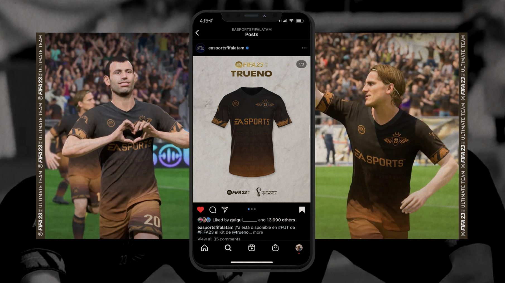
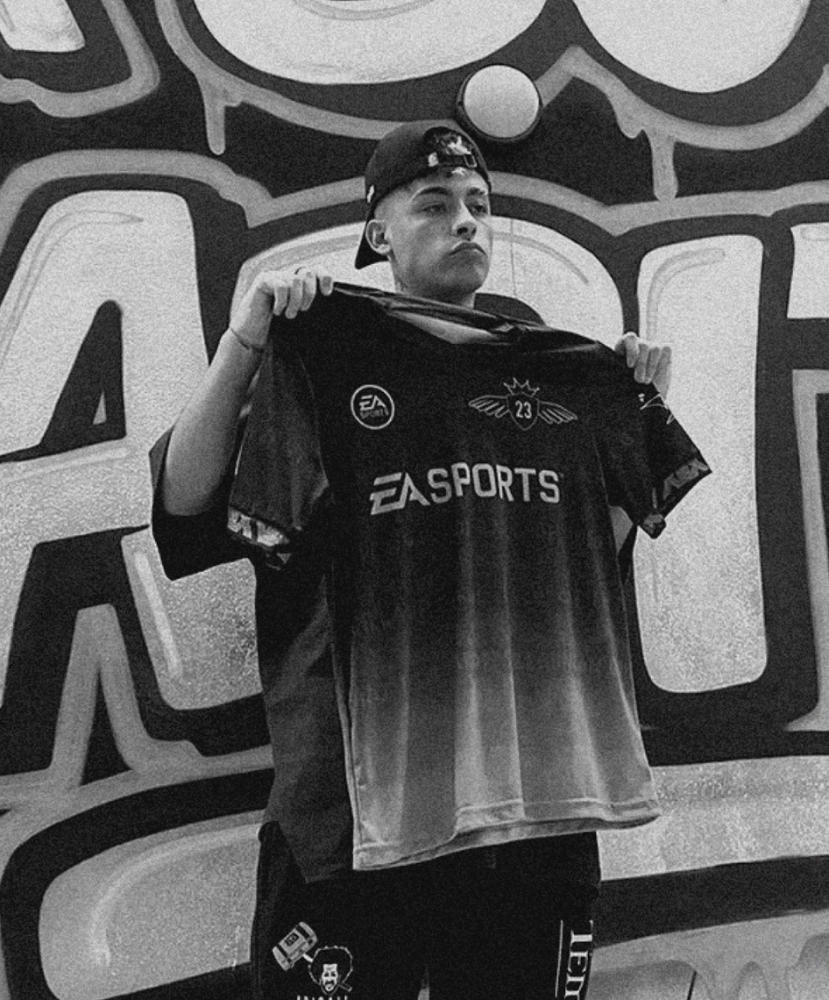
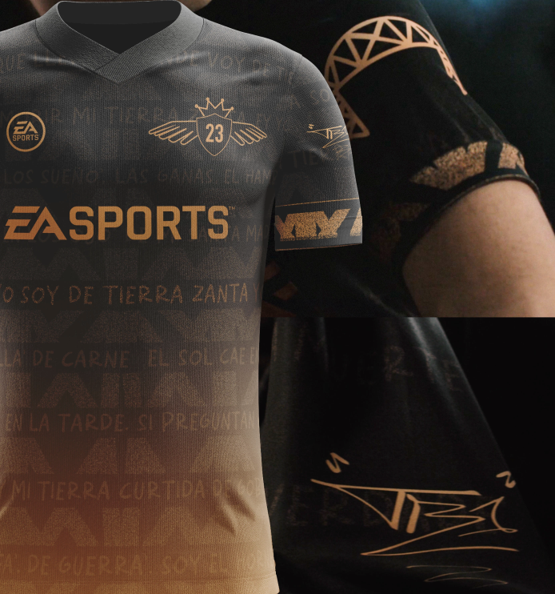
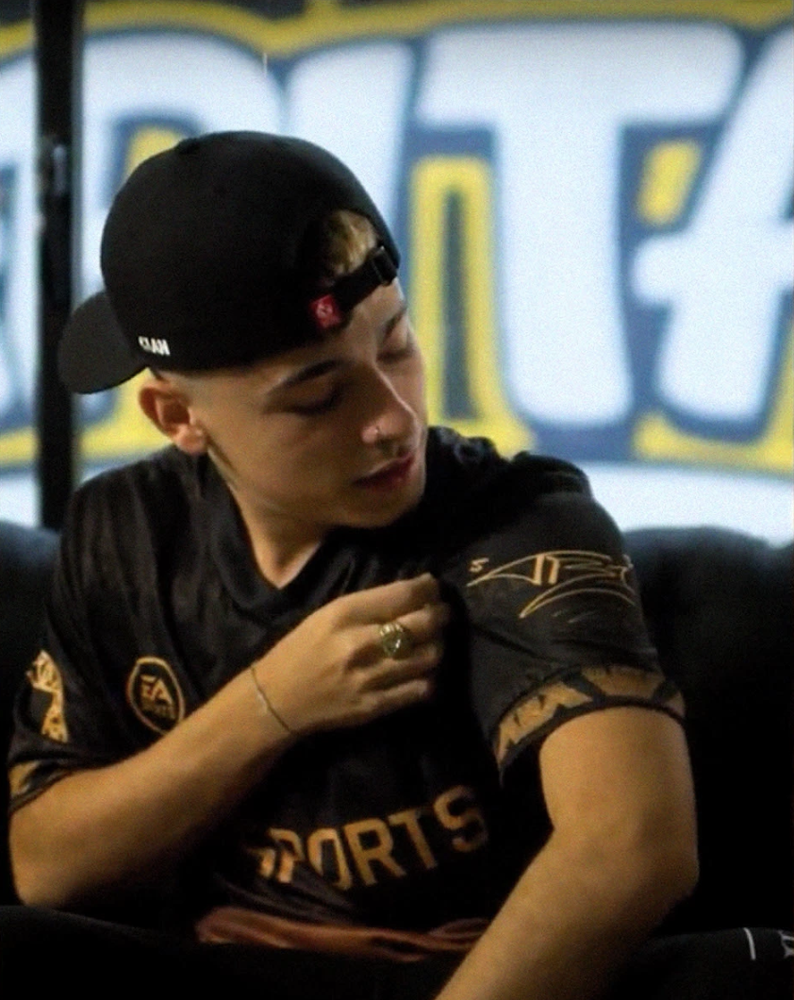
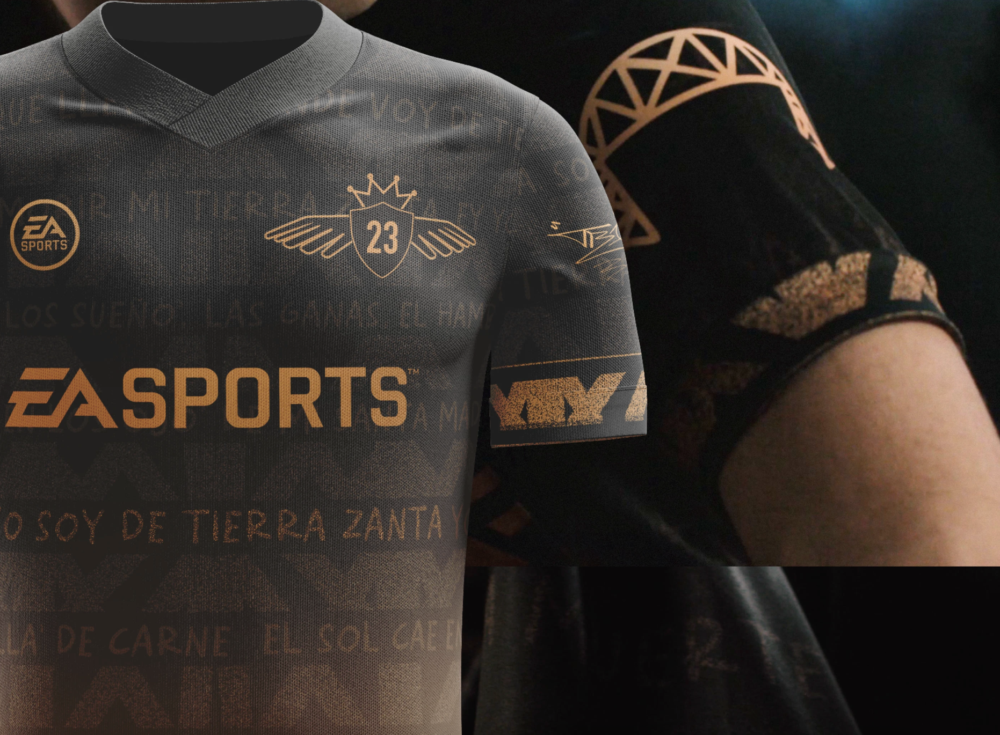
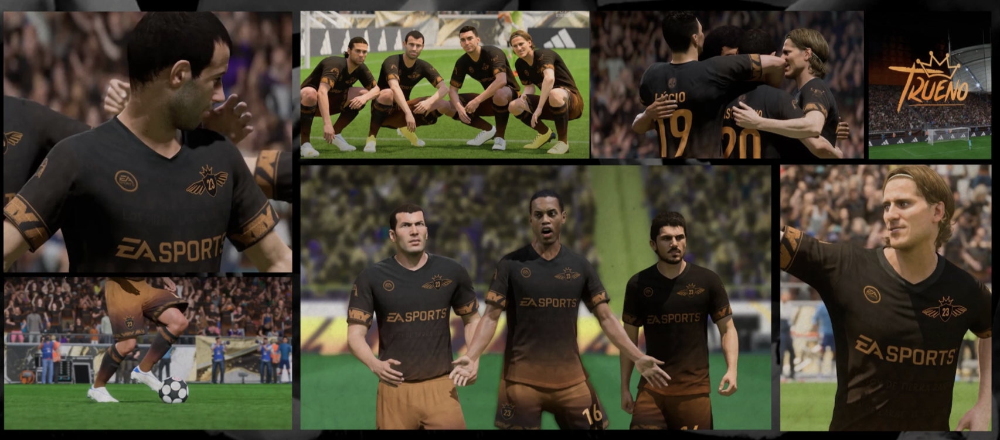

[ Trueno x EA Sports FIFA 22 ]


Para FIFA 22, se encarga el diseño de un vanity kit basado en "Tierra Zanta", canción del álbum "Bien o Mal" de Trueno (2022).
El desafío era traducir un concepto profundamente identitario —raíces, resistencia, orgullo latinoamericano— en un kit visual funcional para un videojuego. No era simplemente un uniforme: era materializar una declaración de identidad dentro de las limitaciones técnicas de un videojuego.
Soy de donde nací, donde voy a morir. Mi tierra zanta.

Trabajé directamente con Trueno en sesiones de trabajo para entender la profundidad de "Tierra Zanta". A partir de sus elementos visuales —firma, símbolos personales, referencias de su territorio— diseñé el kit completo: camiseta, pantalones, accesorios.
La decisión creativa fue la paleta: dorado y negro. Estos colores viven en el ADN visual de Trueno y del álbum "Bien o Mal". Cada elemento respondía directamente a lo que Trueno explicaba sobre su identidad, su territorio y su historia.



El kit lanzó en FIFA 22 y la respuesta fue inmediata: fans pidiendo que se vendiera como camiseta oficial, comentarios masivos en redes, el contenido circuló solo.
Los jugadores no solo usaban el uniforme — llevaban la identidad completa de Trueno. El diseño funcionó porque era auténtico.